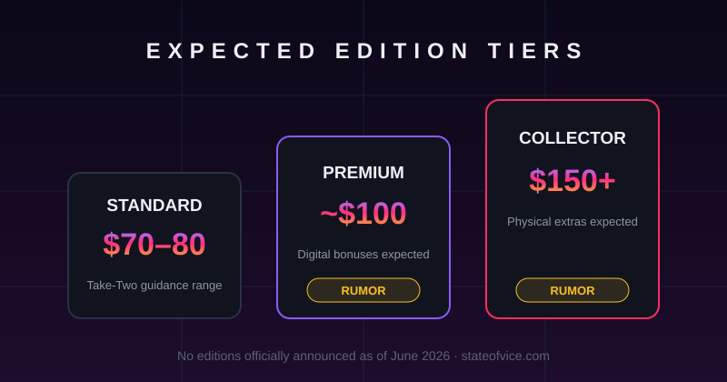

GTA 6 Pre-Orders Open June 25: Date Confirmed, Editions & Price
This is the big one. After months of "around the start of summer" hints, Rockstar has put a real date on the calendar: June 25. Below is exactly what's confirmed, what's still rumor, and how to be ready so you're not fighting store crashes on the day.

What's actually confirmed
- Pre-orders open June 25, 2026. Confirmed by Rockstar Games.
- Platforms: PS5 and Xbox Series X|S only. No PS4/Xbox One, and no PC version at launch.
- Where: digital storefronts (PlayStation Store, Xbox) and select retail partners.
- Cover art revealed — featuring Jason, Lucia and Vice City. You can grab it on our wallpapers page.
- Release date unchanged: November 19, 2026.
How much will GTA 6 cost?
Editions & pre-order bonuses
Which edition should you actually buy?
Until the real editions drop (likely at pre-order launch), the honest guidance mirrors GTA 5 and RDR2:
- Most people: standard edition. Deluxe tiers have historically been cosmetic + in-game-cash, not extra missions.
- GTA Online players: a premium tier can pay for itself if you'll play online heavily — but wait to see what the GTA Online 2 bonuses actually include before committing.
- Collectors: physical/collector editions sell out fast and scalp hard. If a $150+ tier is real, decide before June 25, not after.
Get ready before June 25
- Accounts: confirm your PSN/Xbox login and payment method work now — launch-window store crashes are a tradition.
- Storage: file size isn't announced, but modern Rockstar games are huge — plan to clear 150GB+ or grab an SSD expansion.
- Console check: PS5 or Series X|S only. If you're still on last-gen, that's the thing to sort first.
- Bookmark this page — we update within hours when pricing and editions go live.
Quick FAQ
When exactly do GTA 6 pre-orders open?
June 25, 2026 — confirmed by Rockstar Games. A specific time of day was not given in the announcement.
How much is the standard edition?
Not officially announced. Expected around $70, but that's an expectation, not a confirmed price.
Is there early access for GTA 6?
Leaks claim higher-priced tiers may include early access. Not confirmed by Rockstar.
Will pre-ordering get me into a beta?
No GTA 6 beta has been announced. "Beta key" offers are scams — Rockstar has repeatedly warned about these.
Can I pre-order a PC copy?
No. There is no PC version announced. See our platforms breakdown.